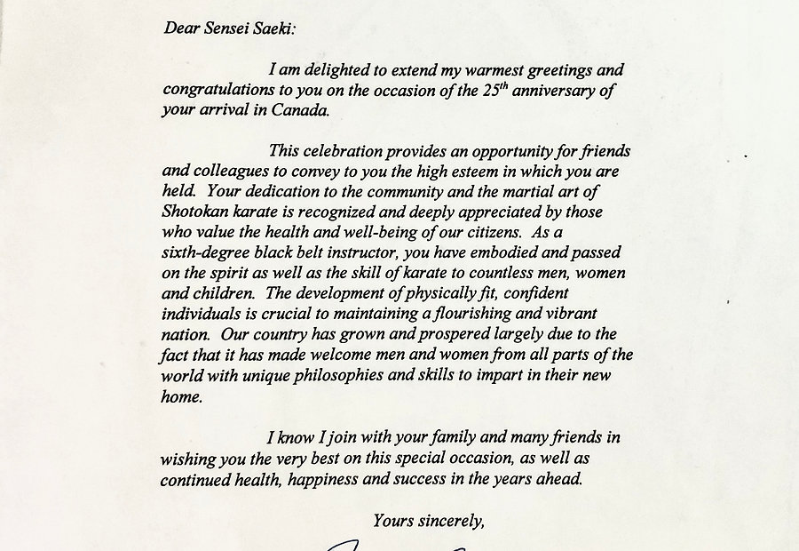

Minoru Saeki
Founder & ChairmanFounded the dojo in 1973. Licensed to conduct examinations up to 3rd Dan and a serving member of the JKA Masters Committee in Tokyo. Originator of the annual summer camp now known as the CJKF Summer Camp.
Home/About Us
Ottawa JKA was established in 1973 by Minoru Saeki, shortly after his arrival in Canada. Masatoshi Nakayama Sensei — the father of modern Shotokan karate — attended the opening.

Our purpose
We are a non-profit organisation whose stated objective is maintaining the quality and values of traditional Shotokan karate.
That sounds simple until you look around. Karate is widely taught and rarely preserved. Belts get cheaper, kata get edited, and within a generation what remains shares only a name with what came before. Guarding against that drift is the actual work of this dojo.
Our method is intensive training that develops mental and physical discipline together. A student who can hold a stance under fatigue learns something that transfers directly: the capacity to overcome challenges and obstacles in real life.
History
Minoru Saeki arrives in Canada and establishes Ottawa JKA. Masatoshi Nakayama Sensei, the man who codified modern Shotokan and led the JKA for decades, attends the opening ceremony in person — an endorsement that set the standard the dojo has held to ever since.

The dojo settles into its building on Cambridge Street South and begins producing its first Canadian black belts. Training is unapologetically traditional: long classes, hard basics, and an expectation that students return.

Saeki Sensei starts an annual summer training camp. It grows steadily until it becomes one of the largest karate events in North America — today the CJKF Summer Camp — drawing instructors and students from across the continent.

Masahiko Tanaka Sensei further develops Canadian karate through his autumn “Koyo Camp,” deepening the exchange of knowledge across North America and cementing the direct line between Ottawa and Tokyo.

Seiji Saeki moves to Japan to train full time. In 2014 he takes first place in kumite at the JKA Kanto Region Championship, becoming Kanto Champion.

Seiji completes the JKA Headquarters instructor training programme in Tokyo — among the very few foreigners ever to finish it. He returns to Ottawa carrying instruction straight from the source.

Seiji and Yulia Saeki continue building connections between Canadian and Japanese dojos, hosting visiting instructors, sending students to train in Japan, and preparing to host the JKA Nationals in Ottawa in 2027.

Recognition
Over the decades the organisation has received repeated recognition from government representatives for its contribution to the community.
The letters are kept, but they are not the point. What they record is simply that a small dojo kept its doors open, kept its standards, and kept turning out people who could hold themselves together — for fifty years.

Leadership
Founded the dojo in 1973. Licensed to conduct examinations up to 3rd Dan and a serving member of the JKA Masters Committee in Tokyo. Originator of the annual summer camp now known as the CJKF Summer Camp.

2014 JKA Kanto Region Championship, 1st Place Kumite. Graduate of the JKA Headquarters instructor training programme, 2016. Leads daily instruction at Cambridge Street.

Master's degree, University of Tsukuba. Directs the organisation's operations and its international exchange programme with dojos in Japan.
Philosophy
Saeki Sensei teaches training as the cultivation of mental emptiness — a mind without clutter, without fear, without hesitation.
In that state a practitioner is free to perform to their maximum ability, because nothing is standing between intention and movement. It is the same awakening Zen Buddhism describes, approached through the body rather than the cushion.
You cannot force it and you cannot buy it. You arrive at it by showing up, repeatedly, for years — which is precisely why the dojo is structured the way it is.
Dōjō Kun
Affiliation
We follow official JKA testing requirements and maintain an active relationship with JKA Headquarters in Tokyo. A grade earned here is a grade recognised there — and everywhere else the JKA operates.